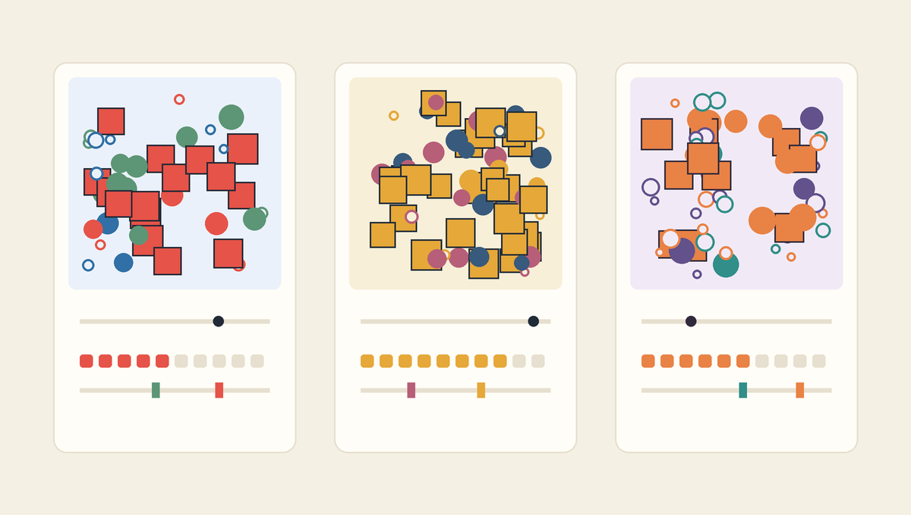

한 함수에 서로 다른 입력을 전달해 세 가지 결과 만들기
- 형식
- 목표 달성형 개인 실습, 최대 50분
- 완료
- 자동 검사 PASS와 두 파일 제출
- 제출
.ipynb+ 비교.png
오늘의 실습 목표
create_poster()의 다섯 매개변수가 함수 안의 작업과 어떻게 연결되는지 확인할 수 있습니다.random.seed(seed_number)로 호출마다 시드를 적용하고 같은 입력의 결과를 재현할 수 있습니다.range(shape_count)로 호출할 때 전달한 도형 수만큼 반복할 수 있습니다.return image로 완성된 Pillow 이미지를 함수 밖의 변수에 전달할 수 있습니다.- A·B·C에 서로 다른 시드·개수·조건 기준·팔레트를 설계해 같은 규칙의 세 변주를 만들 수 있습니다.
- 세 결과를 1800 × 680 비교 PNG로 저장하고 자동 검사와 제출로 완성을 증명할 수 있습니다.
50분을 채우는 수업이 아니라 함수의 재사용을 증명하는 수업
처음 0-7분의 공통 안내가 끝나면 각자 자신의 속도로 진행합니다. 자동 검사에서 완료 문구를 확인하고 `.ipynb`와 비교 `.png` 두 파일을 제출한 학생은 수업 종료 시각을 기다리지 않고 바로 귀가할 수 있습니다.
속도와 미적 취향은 평가하지 않습니다. 함수가 입력을 받아 올바른 이미지를 돌려주고 세 변주를 재현하는지가 완료 기준입니다.
- 노트북 준비사본과 파일명 확인
- 빈 결과 진단세 원인 찾기
- 함수 연결seed·count·return 수정
- 변주 설계A·B·C 입력 조합
- 결과 검증비교 PNG와 자동 PASS
- 제출과 귀가두 파일 확인
EXIT GATE
자동 검사 통과 + 두 파일 제출 확인 = 즉시 귀가
선택 확장은 의무가 아니며 추가 점수도 없습니다. 필수 함수와 세 변주를 완성했다면 네 번째 작품을 만들거나 다른 학생을 기다릴 필요가 없습니다.
귀가 조건: 제출 전에 열 가지 확인
- 노트북 파일명
week06_학번_이름.ipynb형식으로 변경했습니다. - 제출 정보학번, 이름 또는 별명, 25자 이상의 생성기 규칙 문장을 작성했습니다.
- 함수 구조
create_poster()의 다섯 매개변수 이름과 순서를 유지했습니다. - 시드 연결함수 안에서
random.seed(seed_number)를 사용했습니다. - 반복 연결
range(shape_count)로 입력받은 도형 수만큼 반복했습니다. - 결과 반환함수의 마지막에서
return image로 완성 이미지를 돌려주었습니다. - 세 입력 조합A·B·C에 서로 다른 시드와 두 가지 이상의 다른 입력 역할을 사용했습니다.
- 세 결과600 × 600 RGB 이미지 세 장이 서로 다르고 같은 A 입력은 같은 결과를 다시 만듭니다.
- 비교 PNG세 이미지를 담은 1800 × 680 PNG가 현재 결과와 같은 상태로 저장되었습니다.
- 두 파일 제출실행 결과가 포함된 `.ipynb`와 최종 비교 `.png`를 제출했습니다.
자동 검사는 작품의 아름다움을 판정하지 않는다
검사 셀은 함수의 입력 구조, 세 줄의 연결, 입력값의 안전 범위, 팔레트 형식, 세 이미지의 차이와 재현성, 비교 PNG 저장만 확인합니다. 어떤 팔레트가 더 아름다운지, 어느 결과가 더 좋은지는 하나의 정답으로 판정하지 않습니다.
50분 진행 기준
| 시간 | 단계 | 완료 표시 |
|---|---|---|
| 0-7분 | 공통 안내, 노트북 열기, Drive 사본 저장, 파일명 변경 | 자신의 사본이 열림 |
| 7-13분 | 수정 전 전체 실행과 빈 결과의 세 원인 확인 | 고정 seed·1회 반복·빈 return 표시 |
| 13-20분 | 제출 정보와 생성기 규칙 문장 작성 | 제출 정보 작성 완료 |
| 20-30분 | 함수 안의 seed·shape_count·return 세 줄 수정 | 여러 도형이 있는 이미지 반환 |
| 30-39분 | A·B·C 입력값과 팔레트 설계, 세 함수 호출 | 서로 다른 세 이미지 표시 |
| 39-43분 | 1800 × 680 비교 PNG 생성과 최종 확인 | 한 장에 A·B·C가 보임 |
| 43-47분 | 세션 다시 시작, 모두 실행, 자동 검사 PASS | 완료 문구 표시 |
| 47-50분 | 노트북과 비교 PNG 다운로드, 두 파일 제출 | 제출 확인 후 귀가 |
위 시간은 기다려야 하는 시각이 아니라 길을 잃지 않기 위한 기준입니다. 35분에 열 조건을 모두 달성한 학생은 35분에 제출하고 귀가할 수 있습니다. 오류 수정이 필요한 학생은 최대 50분까지 자신의 속도로 진행합니다.
실습 노트북 준비
템플릿에는 함수의 다섯 매개변수, Pillow 생성 코드, 세 호출, 비교 이미지 저장, 자동 검사가 준비되어 있습니다. 학생은 함수 전체를 다시 입력하지 않습니다. EDIT 표시가 있는 제출 정보, 함수 세 줄, A·B·C 설정값만 수정합니다.
위의 시작 버튼으로 Colab 사본을 만들거나 노트북 파일을 내려받습니다. 두 버튼은 같은 템플릿을 엽니다.
- 노트북이 열리면 파일 → Drive에 사본 저장을 선택합니다.
- 상단 파일명을 눌러
week06_학번_이름.ipynb로 바꿉니다. - 준비 셀부터 비교 PNG 저장 셀까지 처음 상태로 한 번 실행합니다.
EDIT영역만 수정하고DO NOT EDIT와 FINAL CHECK는 그대로 둡니다.
노트북이 Colab에서 열리지 않을 때
먼저 Starter notebook 파일을 기기에 내려받습니다. Colab 첫 화면의 업로드 탭 또는 열린 노트북의 파일 → 노트 업로드에서 내려받은 `.ipynb`를 선택합니다.
Pillow를 불러올 수 없다는 오류가 나올 때
준비 셀이 실행되지 않았을 가능성이 큽니다. 위쪽의 import 셀부터 다시 실행합니다. Colab 기본 환경에서는 일반적으로 Pillow가 준비되어 있으므로 임의로 패키지를 삭제하거나 버전을 바꾸지 않습니다.
빈 결과에서 세 원인 찾기
처음 상태로 비교 PNG 저장 셀까지 실행하면 오류 없이 파일이 만들어지지만 세 패널에는 배경만 보입니다. 이것은 파일이 고장 난 상태가 아니라 함수의 입력 연결을 완성하기 위한 출발점입니다.
| 현재 코드 | 현재 동작 | 완성 코드 |
|---|---|---|
random.seed(0) | A·B·C의 seed_number를 받지 않고 항상 0 사용 | random.seed(seed_number) |
range(1) | shape_count와 관계없이 도형을 한 번만 생성 | range(shape_count) |
| 새 빈 이미지 반환 | 그려 둔 image가 아니라 빈 캔버스를 함수 밖으로 전달 | return image |
함수 내부에서는 도형 하나가 실제로 그려지지만 마지막 줄이 새로운 빈 이미지를 반환하므로 호출 결과에는 보이지 않습니다. 이 차이는 “함수 안에서 무엇을 만들었는가”와 “호출한 곳에 무엇을 돌려주었는가”가 별개의 문제임을 보여줍니다.
세 결과가 비어 있는 직접 원인은 마지막의 빈 이미지 반환이며, seed와 반복도 아직 매개변수에 연결되지 않았다고 설명할 수 있으면 진단을 완료했습니다.
빈 결과가 보이면 팔레트부터 바꾸어야 하는가?
아닙니다. 현재는 팔레트가 함수에 전달되어도 함수가 완성 이미지를 반환하지 않으므로 색을 바꿔도 결과가 비어 있습니다. 먼저 함수의 세 줄을 완성한 뒤 A·B·C 설정을 설계합니다.
제출 정보와 생성기 규칙 작성
제출 정보 셀에서 = 오른쪽의 따옴표 안 내용만 자신의 정보로 바꿉니다. generator_rule은 감상문이 아니라 함수에서 유지할 규칙과 호출할 때 바꿀 입력을 설명하는 문장입니다.
student_id = "20260001"
student_name = "김민지"
generator_rule = "600 × 600 형식과 도형 분기는 유지하고 시드·개수·경계·팔레트를 바꾸어 세 가지 변주를 만든다."| 요소 | 이번 미션의 예 | 답할 질문 |
|---|---|---|
| 공통 규칙 | 600 × 600 형식, 여백, 크기 범위, 세 도형 분기 | 세 결과에서 무엇을 유지하는가? |
| 변화 입력 | 시드, 도형 수, 두 조건 기준, 팔레트 | 함수 호출마다 무엇을 바꾸는가? |
| 결과 차이 | 배치, 밀도, 강조 비율, 색상 인상 | 입력이 바뀌면 화면의 무엇이 달라지는가? |
“함수로 예쁜 포스터 세 장을 만든다”가 부족한 이유
함수에서 유지되는 규칙, 호출마다 달라지는 입력, 화면에서 기대하는 차이를 확인할 수 없기 때문입니다. 생성기 규칙은 아름다움의 평가가 아니라 코드의 입력과 결과 관계를 설명해야 합니다.
함수 안의 세 줄 연결
create_poster() 함수 셀의 EDIT A, EDIT B, EDIT C만 아래와 같이 바꿉니다. 줄의 앞쪽 들여쓰기를 유지하고 함수의 다섯 매개변수와 나머지 본문은 수정하지 않습니다.
EDIT A의 줄을random.seed(seed_number)로 바꿉니다.EDIT B의 줄을for shape_number in range(shape_count):로 바꿉니다.EDIT C의 줄을return image로 바꿉니다.
위 세 문장은 각 위치에 입력할 정확한 한 줄입니다. 노트북에서는 난수 선택과 조건 분기 코드가 반복문 안에 이미 들어 있으므로 기존 들여쓰기 구조를 그대로 유지합니다.
| 수정 줄 | 연결되는 매개변수 또는 결과 | 화면에서 확인할 변화 |
|---|---|---|
random.seed(seed_number) | 호출의 seed_number | A·B·C의 배치가 달라지고 같은 입력은 다시 재현됨 |
range(shape_count) | 호출의 shape_count | 한 개가 아니라 40~80개의 도형이 생성됨 |
return image | 함수 안에서 완성한 이미지 | 호출 결과 변수에 도형이 있는 이미지가 저장됨 |
세 줄의 위치는 바꾸지 않는다
시드는 반복문보다 먼저 설정하고, 반복문은 도형 생성 코드를 포함하며, return image는 반복이 모두 끝난 뒤 실행되어야 합니다. return을 반복문 안에 들여쓰면 첫 도형을 만든 직후 함수가 끝납니다.
함수 정의 셀부터 세 함수 호출 셀까지 다시 실행했을 때 세 패널에 여러 도형이 보이면 seed_number, shape_count, return image 연결을 완료했습니다.
도형이 한 개만 보일 때
for shape_number in range(1):이 그대로 남아 있는지 확인합니다. 괄호 안의 1을 shape_count로 바꾸고 함수 정의 셀을 다시 실행한 뒤 세 호출 셀을 실행합니다.
여전히 빈 배경만 보일 때
함수 마지막이 return image인지 확인합니다. 수정한 함수 정의 셀을 다시 실행하지 않았다면 런타임에는 이전 함수가 남아 있으므로 함수 정의 셀과 세 함수 호출 셀을 차례로 다시 실행합니다.
A·B·C의 시드를 바꾸어도 배치가 같을 때
함수 안의 random.seed(0)이 그대로 남아 있을 가능성이 큽니다. 0을 seed_number로 바꾸고 함수 정의 셀을 다시 실행합니다. 호출의 시드값만 바꾸고 정의 셀을 고치지 않으면 입력이 함수 안에서 사용되지 않습니다.
A·B·C 입력 조합 설계
A는 기준안으로 유지해도 됩니다. B와 C는 A와 다른 시드를 사용하고, 도형 수·조건 기준·팔레트에서도 분명한 차이를 만듭니다. 아래 권장값을 그대로 사용해 먼저 PASS를 받은 뒤 선택 확장에서 자신의 값을 더 실험할 수 있습니다.
| 변주 | 시드 | 도형 수 | 중간 기준 | 큰 기준 | 의도 |
|---|---|---|---|---|---|
| A | 73 | 48 | 42 | 64 | 중간 밀도의 기준안 |
| B | 91 | 72 | 38 | 60 | 도형이 많고 채운 형태가 자주 나타나는 안 |
| C | 127 | 48 | 48 | 68 | 작은 윤곽 원이 늘고 큰 사각형이 드문 안 |
# B / 권장 설정
seed_b = 91
shape_count_b = 72
medium_b = 38
large_b = 60
palette_b = [
(247, 239, 216),
(56, 90, 124),
(183, 94, 120),
(229, 168, 57),
(32, 43, 56),
]
# C / 권장 설정
seed_c = 127
shape_count_c = 48
medium_c = 48
large_c = 68
palette_c = [
(241, 234, 246),
(98, 81, 139),
(49, 142, 136),
(233, 130, 69),
(48, 42, 60),
]| 입력 | 완료 조건 | 이유 |
|---|---|---|
| 시드 | A·B·C가 서로 다른 0~9999 정수 | 각 호출에 다른 난수 선택 순서를 부여 |
| 도형 수 | 각각 40~80 정수 | 충분한 시각 결과와 과도하지 않은 실행량 유지 |
| 두 기준 | 20 < medium < large < 80 | 작은·중간·큰 분기의 순서 유지 |
| 구간 너비 | 세 크기 구간을 각각 10 이상 확보 | 각 분기가 나타날 가능성 확보 |
| 팔레트 | 각 안에 서로 다른 RGB 다섯 색 | 배경·주조·보조·강조·윤곽 역할 구분 |
| 팔레트 차이 | B·C는 A에서 각각 세 역할 이상 변경 | 함수 입력에 따른 색상 변주를 화면에서 확인 |

세 함수 호출 셀 아래에 도형이 있는 이미지 세 장이 나타나고 배치·밀도·색상 가운데 두 가지 이상이 서로 다르면 A·B·C 입력 설계를 완료했습니다.
조건 기준 또는 구간 너비 오류가 나올 때
각 안을 따로 읽어 20 < medium < large < 80 순서를 확인합니다. 이어서 medium - 20, large - medium, 80 - large가 모두 10 이상인지 계산합니다. 권장값에서 시작하면 안전합니다.
팔레트 검사에서 멈출 때
각 팔레트가 대괄호 안에 RGB 튜플 다섯 개를 갖는지 확인합니다. 각 튜플에는 0~255 정수 세 개가 필요하고 한 팔레트 안의 다섯 색은 모두 달라야 합니다. B와 C는 A와 비교해 각각 세 줄 이상의 RGB를 바꿉니다.
같은 함수 세 번 호출
세 함수 호출 셀은 수정하지 않습니다. A·B·C 설정 셀에서 정한 값을 키워드 인자로 전달하고, 함수가 return image로 돌려준 결과를 세 변수에 저장합니다.
poster_a = create_poster(
seed_number=seed_a,
shape_count=shape_count_a,
medium_threshold=medium_a,
large_threshold=large_a,
palette=palette_a,
)seed_number=seed_a에서 왼쪽은 함수 정의의 매개변수 이름이고 오른쪽은 A 설정값이 담긴 변수입니다. B와 C도 같은 함수 본문을 실행하지만 오른쪽에 전달하는 값이 달라 서로 다른 결과를 만듭니다.
기준 시드·개수·조건·팔레트를 함수에 전달하고 poster_a를 받습니다.
같은 함수에 더 높은 밀도와 다른 팔레트를 전달하고 poster_b를 받습니다.
같은 함수에 다른 경계와 팔레트를 전달하고 poster_c를 받습니다.
세 함수를 만든 것이 아니라 한 함수를 세 번 호출했다
create_poster_a, create_poster_b, create_poster_c를 따로 정의하지 않습니다. 공통 생성 절차는 한 함수에 두고 달라질 값만 호출 인자로 전달하는 것이 이번 미션의 핵심입니다.
세 결과를 비교 PNG로 저장
비교 PNG 저장 셀은 세 이미지를 600픽셀씩 가로로 배치하고 위쪽 80픽셀 영역에 A·B·C의 시드와 도형 수를 표시합니다. 코드는 수정하지 않으며 결과가 바뀌면 다시 실행합니다.
| 영역 | 좌표 범위 | 내용 |
|---|---|---|
| 상단 정보 | y = 0~79 | A·B·C의 시드와 도형 수 |
| A 결과 | x = 0~599, y = 80~679 | poster_a |
| B 결과 | x = 600~1199, y = 80~679 | poster_b |
| C 결과 | x = 1200~1799, y = 80~679 | poster_c |
| 전체 파일 | 1800 × 680 RGB | week06_학번_이름_generator.png |
입력을 바꾼 뒤에는 호출과 저장을 모두 다시 실행한다
A·B·C 값을 바꾼 뒤 호출 셀만 실행하면 화면의 세 이미지는 바뀌지만 저장된 비교 PNG는 이전 상태일 수 있습니다. 최종 수정 후에는 설정 → 호출 → 저장 순서로 다시 실행합니다.
비교 PNG가 현재 세 이미지와 다르다는 오류가 나올 때
현재 poster_a, poster_b, poster_c가 저장된 비교 이미지와 다릅니다. 세 함수를 다시 호출하고 바로 이어서 비교 PNG 저장 셀을 실행합니다.
새 세션에서 자동 검사 PASS
- 현재 수정 내용이 Drive 사본에 저장되었는지 확인합니다.
- 런타임 → 세션 다시 시작을 선택합니다.
- 런타임 → 모두 실행을 한 번 선택합니다.
- 실행 중에는 중간 셀을 따로 누르지 말고 FINAL CHECK까지 기다립니다.
- 아래 여덟 줄이 모두 나타나는지 확인합니다.
✅ 제출 정보와 생성기 규칙 문장 검사 통과
✅ create_poster 다섯 매개변수 검사 통과
✅ seed·shape_count·return 연결 검사 통과
✅ A·B·C 입력 조합과 팔레트 검사 통과
✅ 세 이미지의 재현성과 차이 검사 통과
✅ 1800 × 680 비교 PNG 저장 검사 통과
✅ 새 런타임 전체 실행 검사 통과
🎉 WEEK 06 PARAMETER GENERATOR COMPLETE
FINAL CHECK 코드는 이번 주 학습 범위가 아니다
검사 셀에는 아직 배우지 않은 inspect, 집합, 리스트 컴프리헨션, 픽셀 비교 코드가 포함되어 있습니다. 직접 작성하거나 해석할 필요가 없습니다. 오류의 마지막 한글 문장을 읽고 해당 STEP의 EDIT 영역만 수정합니다. 검사 코드를 지우거나 바꾸어 통과시키면 완료로 인정하지 않습니다.
“seed·shape_count·return 세 줄을 바꾸세요”라는 오류가 나올 때
함수 정의 셀에서 random.seed(seed_number), range(shape_count), return image 세 줄을 교안과 한 글자씩 비교합니다. 수정한 정의 셀을 실행한 뒤 세 함수 호출과 비교 PNG 저장도 다시 실행합니다.
“A·B·C가 서로 다른 이미지가 되어야 합니다”라는 오류가 나올 때
세 시드가 서로 다른지 먼저 확인합니다. 이어서 B와 C의 팔레트가 A와 실제로 다른지, 도형 수 또는 조건 기준도 다르게 정했는지 확인합니다. 함수의 시드 줄이 여전히 0으로 고정되어 있지 않은지도 함께 확인합니다.
새 런타임 전체 실행 오류가 나올 때
셀을 개별적으로 여러 번 실행한 상태입니다. 수정 내용을 저장한 뒤 런타임 → 세션 다시 시작을 선택하고 모두 실행을 한 번만 선택합니다. 실행 중에는 개별 셀 버튼을 누르지 않습니다.
두 파일 제출과 귀가
- 마지막 셀에 WEEK 06 PARAMETER GENERATOR COMPLETE가 보이는지 확인합니다.
- 파일 → 다운로드 → .ipynb 다운로드로 실행 결과가 포함된 노트북을 받습니다.
- Colab 왼쪽 파일 목록에서
week06_학번_이름_generator.png를 찾아 다운로드합니다. - 제출함에
week06_학번_이름.ipynb와 비교 `.png` 두 파일을 모두 업로드합니다. - 제출 완료 상태를 확인하면 남은 시간과 관계없이 바로 귀가합니다.
완료 판정
자동 검사 PASS가 보이고 제출함에 올바른 `.ipynb`와 비교 `.png`가 등록되었다면 오늘의 필수 학습 목표를 달성했습니다. 작품의 미적 취향, 작업 속도, 남은 수업 시간은 완료 판정에 반영하지 않습니다.
선택 확장: 제출 후 더 실험하고 싶은 경우만
아래 활동은 귀가 조건이 아니며 추가 점수도 없습니다. 필수 두 파일을 먼저 제출한 학생만 선택합니다.
- A와 같은 팔레트에서 시드만 바꾼 D를 만들어 배치 차이를 비교합니다.
- 같은 시드와 팔레트에서 도형 수만 바꾸어 밀도 차이를 비교합니다.
- 같은 시드에서 두 조건 기준만 바꾸어 강조 사각형의 수를 비교합니다.
- 함수의 고정 여백과 캔버스는 유지한 채 새로운 팔레트 하나를 설계합니다.
7주차 연결: 반환된 이미지를 다시 사용할 시각 재료로 보기
오늘의 함수는 이미지를 파일로만 끝내지 않고 return image로 Pillow 이미지 객체를 돌려주었습니다. 7주차에는 이 반환 결과를 다시 불러와 자르기, 크기 변경, 회전, 투명 레이어 합성에 사용합니다. 자신의 6주차 비교 PNG와 세 포스터는 다음 주 프로토타입의 출발 재료가 됩니다.
공식 도움말
- Google Colab 공식 입문 노트북코드 셀 실행, Drive 사본 저장, 노트북 다운로드 방법
- Python 공식 튜토리얼: Defining Functions함수 정의, 매개변수, 인자, 지역 변수와 반환값의 공식 설명
- Python 공식 튜토리얼: Keyword Arguments키워드 이름으로 함수의 입력값을 전달하는 공식 사용법
- Python 언어 참조: return함수의 결과를 호출한 곳으로 전달하는 return 문장
- Python 공식 문서: random.seed같은 입력으로 난수 선택을 다시 재현하는 시드 설정
- Pillow 공식 문서: Image 객체함수가 반환하고 비교 PNG에 배치하는 Pillow 이미지 객체